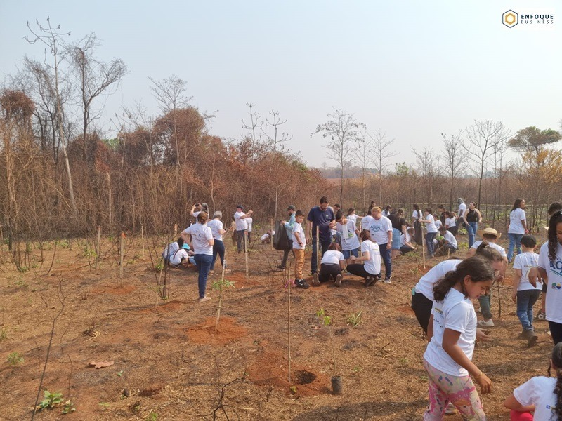

ECA Ambiental
Toda criança e todo adolescente têm direito à natureza — e esse direito deve ser garantido com absoluta prioridade.
O que é o ECA Ambiental
“ECA Ambiental” é o nome pelo qual ficou conhecida a Lei nº 15.512, de 22 de setembro de 2026, que estabelece princípios e diretrizes para políticas públicas que garantam, com absoluta prioridade, o direito da criança e do adolescente à natureza.
A lei também altera três normas importantes: o Estatuto da Criança e do Adolescente (Lei nº 8.069/1990), a Política Nacional do Meio Ambiente (Lei nº 6.938/1981) e a Política Nacional sobre Mudança do Clima (Lei nº 12.187/2009).
“A criança e o adolescente têm direito à natureza, o qual deverá ser efetivado com absoluta prioridade.” Lei nº 15.512/2026, art. 2º
O que a lei garante
De acordo com a lei, o direito da criança e do adolescente à natureza compreende:
Acesso a áreas naturais saudáveis e ecologicamente equilibradas, inclusive praças, parques e rios próximos de casa e da escola.
Convivência familiar e comunitária, atividades culturais e vínculos afetivos com a natureza.
O brincar livre e em contato com a natureza.
Educação baseada na natureza.
A defesa, a conservação e a recuperação da natureza para as gerações presentes e futuras.
A prioridade absoluta significa, entre outros pontos, que crianças e adolescentes devem ter primazia na proteção em situações de riscos socioambientais e climáticos, precedência no acesso a áreas naturais e preferência nas políticas públicas ambientais e climáticas. Crianças na primeira infância, com deficiência ou em situação de vulnerabilidade têm prioridade ainda maior.
A lei também orienta o planejamento das cidades: rotas seguras até a escola, praças e parques que incentivem o brincar na natureza, espaços de brincar “naturalizados” e sistemas de alerta e rotas de fuga compreensíveis para crianças em eventos climáticos extremos.
Educação baseada na natureza
A lei pede que União, estados e municípios estimulem a educação baseada na natureza nas redes de ensino. Ela é definida como a convergência da educação ambiental e climática com estratégias que fomentem o acesso e o vínculo com a natureza, a promoção da biodiversidade, a valorização da interdependência de todas as formas de vida e a resiliência climática.
A lei também prevê o incentivo a grupos de crianças, adolescentes e famílias que atuem na defesa, conservação e recuperação da natureza em suas comunidades.
Por que sensibilizar faz diferença
Uma lei só se transforma em realidade quando as pessoas a conhecem. Quem cresce em contato com rios, matas e nascentes aprende a valorizá-los — e se torna o adulto que vai protegê-los. Por isso, informar famílias, educadores e gestores públicos é o primeiro passo para que esse direito saia do papel.
O IPAC e o ECA Ambiental
A sensibilização ambiental está no centro do trabalho do IPAC. No projeto Cultivando Água Boa Tangará, estudantes de escolas públicas e privadas participam de ações nas nascentes dos rios Queima Pé e Ararão — plantios, atividades educativas e acompanhamento da recuperação da água que abastece a cidade.


Como você pode participar
- Famílias: levem as crianças para brincar ao ar livre, em praças, parques e áreas verdes próximas.
- Escolas: incluam atividades em ambientes naturais no planejamento pedagógico e convidem o IPAC para ações de educação ambiental.
- Comunidades: cuidem das áreas verdes e das nascentes do bairro e acompanhem as políticas municipais.
- Gestores públicos: considerem as crianças no planejamento urbano e nas políticas ambientais e climáticas.
Se você souber de alguma violação dos direitos de crianças e adolescentes, procure o Conselho Tutelar, o Ministério Público ou o Disque 100.
Perguntas frequentes
A lei já está valendo?
A Lei nº 15.512 foi sancionada em 22 de setembro de 2026 e publicada no Diário Oficial da União. Para saber a vigência de cada dispositivo, consulte o texto oficial no Portal da Legislação do Planalto.
Quem é responsável por garantir esse direito?
A lei atribui o dever à União, aos estados, ao Distrito Federal e aos municípios, em regime de colaboração, e também à família, à comunidade e à sociedade.
A lei vale também para empresas e organizações privadas?
Segundo o art. 3º, os princípios da lei podem ser aplicados às atividades do setor público e de entes privados. A lei também menciona a inclusão dos direitos de crianças e adolescentes em metas e relatórios de sustentabilidade corporativa.
O que é uma “área azul urbana”?
São os ecossistemas aquáticos urbanos e periurbanos — como rios, córregos e lagoas — que têm função ecológica, paisagística e recreativa e melhoram a saúde e a qualidade de vida da população.
Fontes oficiais
- Texto integral da Lei nº 15.512/2026 — Portal da Legislação (Planalto)
- Agência Gov — ECA Ambiental: sancionada lei que estabelece princípios e diretrizes
- Ministério dos Direitos Humanos e da Cidadania
Esta página tem caráter informativo e educativo e não substitui a leitura do texto legal nem orientação jurídica. Conteúdo conferido com o texto publicado no Portal da Legislação em outubro de 2026.